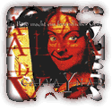
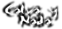

 |
 | ||||
| Calva y Nada es un curioso grupo de personajes creadores de un sonido muy propio y peculiar. En su momento, fueron la cabeza visible del movimiento de música dark que salió a principios de los 90. | |||||
Están pricipalmente influenciados por grupos como D.A.F. y por los sonidos oscuros de la buena música industrial. Además, tienen también canciones en castellano, bastante curiosas en cuanto a rima y tratamiento. |
|||||
Ya que no he encontrado ningún
recurso en la Red todavía, |
|||||
|
|
||||